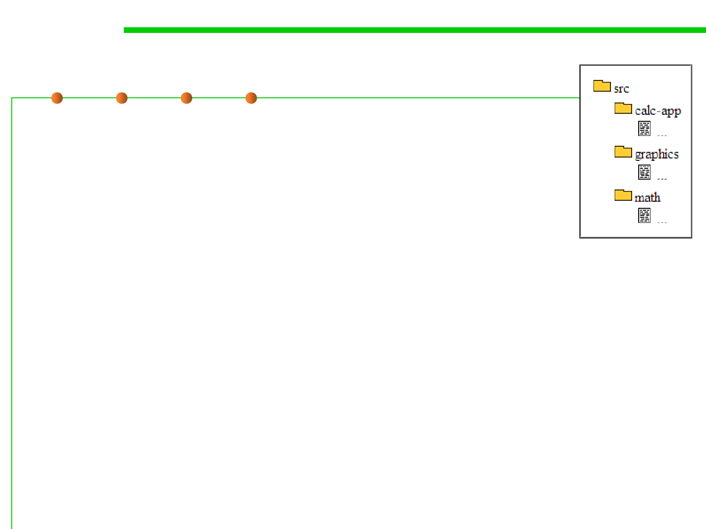

2.2 Process, Systems, and Tools of Software Construction
Building subtargets
▪ Any large piece of software can be divided into a number
of subcomponents, often in the form of a static or dynamic
library. Each component provides only a portion of the
program’s full functionality and is developed somewhat
independently from other components.
▪ To avoid time-consuming in building the entire source tree to create
the final executable program, it’s better to choose to limit the
number of subcomponents they build instead of always rebuilding
the whole source tree. 避免耗时的完全构建，限制构建涉及的某块数
量